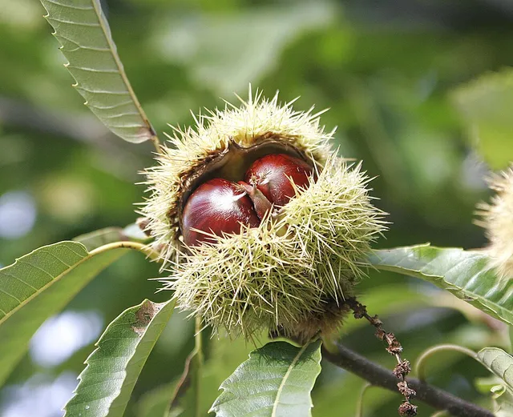

Main course
Chestnut and mushroom roast
Chestnut and mushroom roast is made with wild sweet chestnut.

How do you make chestnut and mushroom roast?
Roasted chestnuts in a nut roast with mushrooms.
Wild ingredients
- Sweet chestnut (Castanea sativa): in season October to November